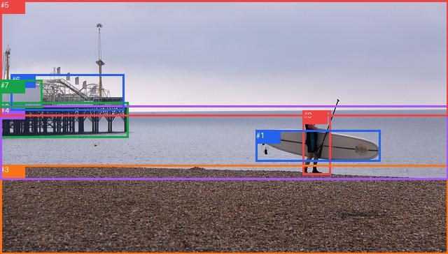

wrong_predicate_0002

完整GT
| 主体 | GT谓词 | 客体 |
|---|
| 0 | holding | 1 |
| 0 | holding | 1 |
| 0 | on | 3 |
| 0 | standing on | 3 |
| 0 | beside | 4 |
| 3 | beside | 4 |
| 5 | over | 4 |
| 6 | sitting on | 2 |
| 7 | sitting on | 2 |
预测top50
| 排名 | 主体→谓词→客体 | score | fused logit | 是否GT |
|---|
| 1 | #0 → carrying → #1 | 0.994309 | 5.163068 | False |
| 2 | #0 → standing on → #3 | 0.973772 | 3.614351 | True |
| 3 | #7 → on → #2 | 0.960979 | 3.203865 | False |
| 4 | #0 → looking at → #4 | 0.958083 | 3.129255 | False |
| 5 | #6 → on → #2 | 0.954113 | 3.034598 | False |
| 6 | #7 → on → #6 | 0.951408 | 2.974488 | False |
| 7 | #3 → beside → #4 | 0.951135 | 2.968584 | True |
| 8 | #5 → over → #4 | 0.950718 | 2.959651 | True |
| 9 | #2 → in → #4 | 0.941343 | 2.775596 | False |
| 10 | #4 → beside → #3 | 0.928221 | 2.559678 | False |
| 11 | #2 → on → #3 | 0.927208 | 2.544570 | False |
| 12 | #6 → on → #3 | 0.901680 | 2.216033 | False |
| 13 | #6 → on → #4 | 0.899517 | 2.191866 | False |
| 14 | #7 → beside → #4 | 0.869002 | 1.892161 | False |
| 15 | #1 → on → #3 | 0.837159 | 1.637243 | False |
| 16 | #5 → over → #0 | 0.796863 | 1.366802 | False |
| 17 | #7 → on → #3 | 0.729856 | 0.993890 | False |
| 18 | #5 → over → #3 | 0.726949 | 0.979198 | False |
| 19 | #1 → beside → #4 | 0.715236 | 0.920951 | False |
| 20 | #4 → beside → #2 | 0.685728 | 0.780225 | False |
| 21 | #6 → on → #7 | 0.673609 | 0.724554 | False |
| 22 | #2 → beside → #6 | 0.666267 | 0.691350 | False |
| 23 | #4 → beside → #0 | 0.655429 | 0.642989 | False |
| 24 | #1 → beside → #0 | 0.600157 | 0.406118 | False |
| 25 | #0 → looking at → #5 | 0.596557 | 0.391139 | False |
| 26 | #4 → beside → #6 | 0.542974 | 0.172321 | False |
| 27 | #3 → beside → #2 | 0.539655 | 0.158955 | False |
| 28 | #2 → beside → #0 | 0.494935 | -0.020261 | False |
| 29 | #5 → over → #2 | 0.418181 | -0.330245 | False |
| 30 | #2 → beside → #7 | 0.409167 | -0.367409 | False |
| 31 | #4 → beside → #5 | 0.385988 | -0.464210 | False |
| 32 | #0 → looking at → #2 | 0.377781 | -0.498977 | False |
| 33 | #5 → over → #6 | 0.368213 | -0.539892 | False |
| 34 | #0 → entering → #6 | 0.344992 | -0.641125 | False |
| 35 | #6 → beside → #0 | 0.336027 | -0.681048 | False |
| 36 | #4 → beside → #1 | 0.306077 | -0.818526 | False |
| 37 | #3 → beside → #0 | 0.302872 | -0.833661 | False |
| 38 | #4 → beside → #7 | 0.276630 | -0.961239 | False |
| 39 | #3 → beside → #6 | 0.275771 | -0.965536 | False |
| 40 | #6 → in → #5 | 0.249381 | -1.101918 | False |
| 41 | #5 → over → #7 | 0.161886 | -1.644263 | False |
| 42 | #1 → beside → #2 | 0.161067 | -1.650310 | False |
| 43 | #2 → beside → #1 | 0.146380 | -1.763281 | False |
| 44 | #3 → beside → #1 | 0.136858 | -1.841633 | False |
| 45 | #6 → beside → #1 | 0.126348 | -1.933642 | False |
| 46 | #7 → in → #5 | 0.100277 | -2.194148 | False |
| 47 | #7 → beside → #0 | 0.097827 | -2.221605 | False |
| 48 | #5 → over → #1 | 0.092559 | -2.282784 | False |
| 49 | #3 → beside → #7 | 0.090320 | -2.309734 | False |
| 50 | #2 → in → #5 | 0.071627 | -2.561965 | False |
每个GT的采样、谓词与融合定位
| GT方向 | GT谓词 | 阶段 | slot | 最佳谓词 | GT词logit | pair logit | GT融合logit | GT词对内rank |
|---|
| #0→#1 | holding | wrong_predicate | 0 | carrying | 4.293576717376709 | 0.39293399453163147 | 4.6865105628967285 | 2 |
| #0→#3 | on | wrong_predicate | 2 | standing on | 3.288356304168701 | 0.056434959173202515 | 3.3447911739349365 | 2 |
| #0→#3 | standing on | hit50 | 2 | standing on | 3.5579161643981934 | 0.056434959173202515 | 3.6143510341644287 | 1 |
| #0→#4 | beside | wrong_predicate | 3 | looking at | 2.2398791313171387 | -0.1542203426361084 | 2.0856587886810303 | 2 |
| #3→#4 | beside | hit50 | 7 | beside | 3.297698974609375 | -0.3291151523590088 | 2.968583822250366 | 1 |
| #5→#4 | over | hit50 | 10 | over | 3.4348483085632324 | -0.47519683837890625 | 2.959651470184326 | 1 |
| #6→#2 | sitting on | wrong_predicate | 5 | on | -0.49626874923706055 | -0.31451916694641113 | -0.8107879161834717 | 12 |
| #7→#2 | sitting on | wrong_predicate | 6 | on | 0.21692466735839844 | -0.32064467668533325 | -0.10372000932693481 | 7 |